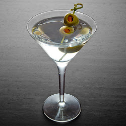

Proper Martini

Gin Cocktail
A true classic with strict rules
Ingredients
- 3 oz London dry gin
- 1/2 oz dry vermouth
- 2-3 green olives
Instructions
if you still have any vodka from the previous cocktails throw it away. It
has no place here.
If you have any of those nouveau floral gins throw them away too. Your gin
should taste like you've made out with a pine tree.
- Add the gin and vermouth to a mixing glass filled with ice and stir
until well-chilled.
- Strain into a chilled cocktail glass.
- Garnish with a skewer of olives.